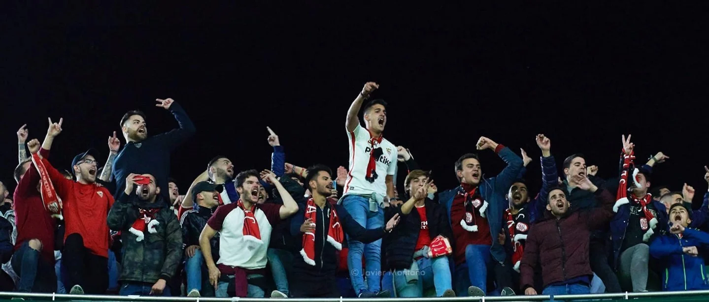
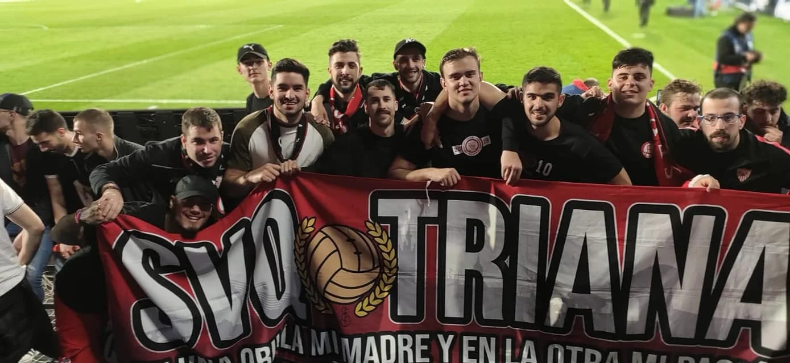
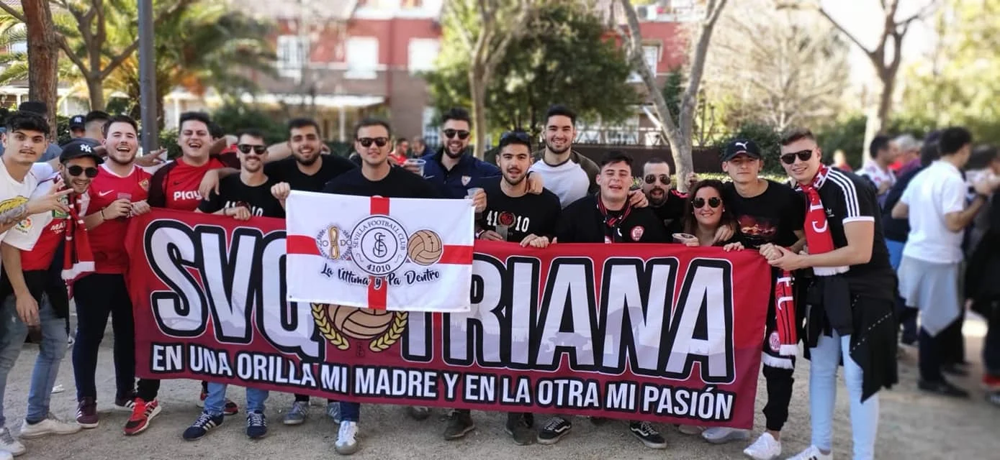
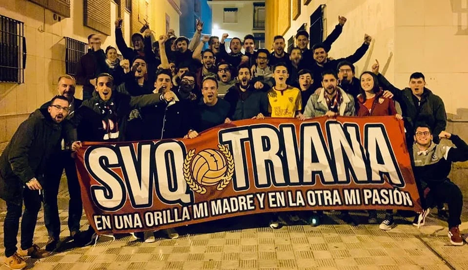

¿QUIÉNES SOMOS?
Vinimos al mundo la tarde calurosa del 27 de julio de 2019.
Varios chavales del barrio de Triana llevábamos tiempo barruntando la idea de crear una peña sevillista
en nuestro arrabal. El boca a boca y un grupo de WhatsApp que echaba humo (donde surgieron conversaciones
en torno al nombre, al escudo y a todos los sueños que aquello nos creaba día tras día) fueron la semilla
que acabó germinando en lo que somos hoy día.
Éramos muchos chavales que nos conocíamos de toda la vida del barrio y siempre andábamos desperdigados
tanto en las previas como en los viajes del Sevilla. Tuvimos claro que esa vacante sin cubrir era para
nosotros. Hoy podemos asegurar que los que en ese tiempo eran conocidos de vista con los que quizás habías
corrido de pequeño dándole patadas a un balón pero que jamás te habías parado a indagar si vuestro
sentimiento sevillista se merecía un brindis, han pasado a ser familia.
La peña comenzó con buena aceptación y en los primeros días de abono alcanzamos unos 80 socios. Esas semanas
sacamos nuestra célebre bufanda que fue el primer escalón necesario para empezar a sentirnos representados,
pero todo cambió cuando lanzamos el Spot 19/20 (prácticamente habíamos cumplido un mes de vida).
Se viralizó
tanto que incluso el Sevilla FC lo compartió en rrss, tv, y radio. Fueron días maravillosos y ajetreados
donde doblamos los socios. En cualquier red social y grupo de WhatsApp que entrábamos estaba el vídeo y los
versos del poema (versos que rezan en nuestra bandera oficial). Superó en un día las 150.000 visualizaciones
y no nos quedaban manos para agradecer tantos comentarios y muestras de cariño. Ahí vimos claramente que lo
que pudo ser un sueño efímero de una tarde calurosa de julio, se había convertido en una realidad que nos
sobrepasaba. Aunque se nos tildó como "la peña de los chavales de Triana", desde el primer momento hemos
tenido socios de todas las edades y así sigue siendo. Todo el trabajo del primer año nos hizo alcanzar los
230 socios.
Luego llegaría el primer viaje de la peña (de forma clandestina al Villamarín), llegaría nuestro I Pregón de
Navidad en diciembre de 2019, llegaría un autobús (organizado por nosotros) y rebosante de sevillismo
caminito de Pamplona, llegaría otro autobús de las mismas características arribando en Getafe y llegaría una
pandemia que nos truncó el vuelo. Incluso inmersos en ella hicimos un Sorteo Solidario para el Comedor Social
de Triana en el que pudimos ayudar con nuestro granito de arena a los que más lo necesitan, a la par que vería
la luz nuestro Spot 20/21 con un grito de esperanza…
Y aquí estamos con más fuerza que nunca. Igual que aquella tarde calurosa de julio.
¿Quieres seguir escribiendo la historia con nosotros?



